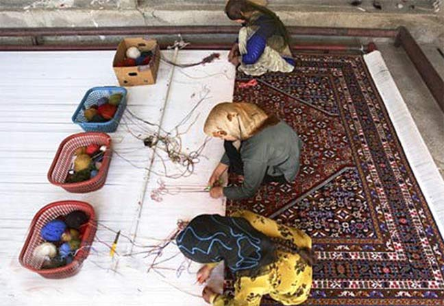

我非常喜欢一个有关织波斯地毯的故事。
织波斯地毯的方法，是摆好一个大型的垂直的伸展架，织毯的师傅站在毯子的一端发号施令，助手们则站在另一端动手织毯子。
一整天，助手们就站在自己的岗位上，听师傅的口令做动作，拉扯一条条毛线。有时出错了，师傅不需要叫他们解开织错的线重织，仅在原来织错的纹路上，靠着熟练的技巧再创造出新的花样。通常，修改后的花样比原来的样式更好看。
工作一整天之后，助手们走到师傅这一边，才第一次看到他们辛苦工作的成果，美丽的图纹代替了一整天所看到的单调毛线。
生命也是如此。我们日复一日地工作，就像那些织毯的助手们，每天实际动手去操作，看到的只是一条条生命的毛线。但另一端站着的正是伟大的织毯师——神，只有他知道我们所将要织成的美丽图案。
神对我们的生命早已有了计划，只有在我们违反他的计划时，事情才会出错。随着聆听神的旨意使我们特有的天赋，经由祈祷和沉思，你将能领悟神对你此生的计划。
当我们认为经历了一场大灾难时，如果时候回顾，便会突然发觉，无论当时它看起来是如何晦暗不乐观，事实上对我们是有益的。但是，请时时谨记一切都在伟大的织毯师——神的掌握中。